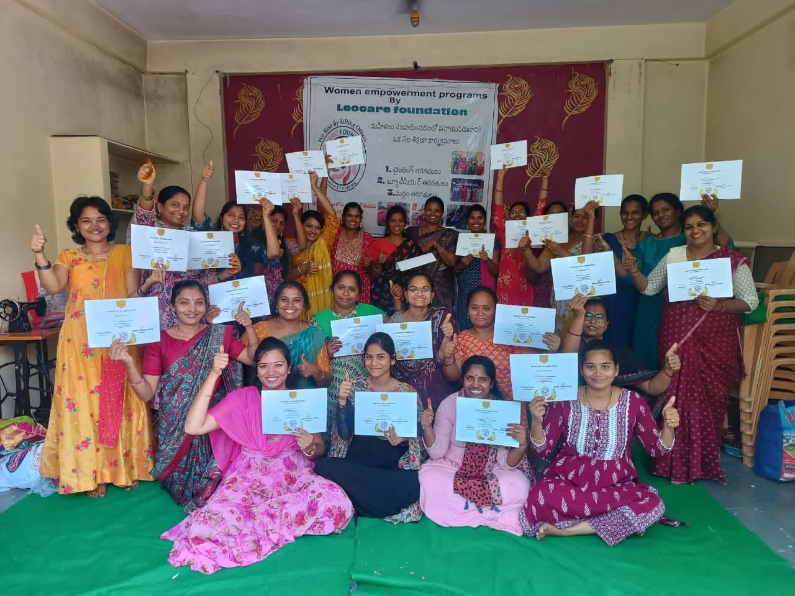
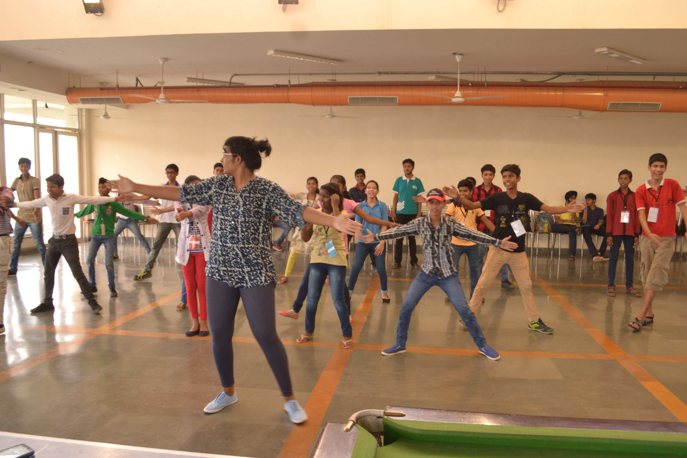

Dec 2019
The Ohio State University
M.S., Electrical & Computer Engineering · Columbus, OH
Medical device systems engineer — taking Class II & III systems from concept to FDA clearance, across surgical robotics and intravascular imaging.
I'm a systems engineer who brings complex medical devices to life — from surgical robotics at Johnson & Johnson's Monarch platform to first-generation intravascular ultrasound (IVUS) imaging at Evident Vascular. I love the part of the work where messy clinical reality, engineering trade-offs, and regulatory rigor all have to meet in one coherent system.
My work spans 510(k) strategy and submissions — three of them hands-on — system integration, design verification & validation, system risk management (ISO 14971), with working knowledge of both the US and Indian medtech ecosystems. I've also worked on developing an early-stage digital health venture and stay involved in community work around STEM education and women in tech.
I love a good collaboration and am always happy to talk about anything digital health or medtech — if that's you, I'd love to connect.

Team member since inception (Hyderabad, 2021–present). Its skill-development program has trained 450+ women from under-privileged rural communities.
Convenor & Lead Organiser — led 20+ teams and 300 volunteers for a 5,000-attendee festival; first female head in its history; raised ~$25K in sponsorship.

Lead Organizer & founding member — designed a STEM curriculum and ran workshops for 500+ underprivileged students over three years.